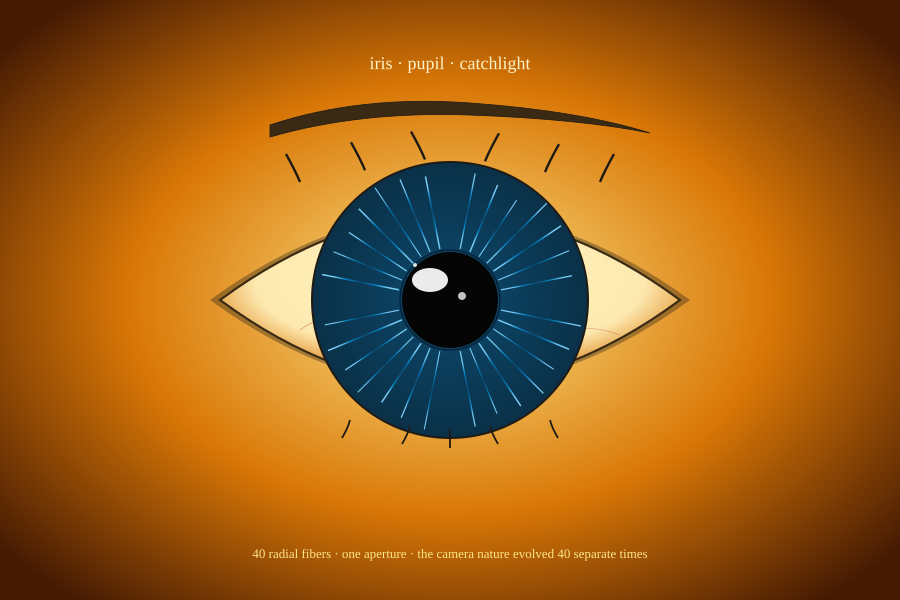

The camera nature evolved 40 separate times. You asked Claude. Glyph drew it — from a compose spec. Almond sclera, radial-fiber iris, black pupil, a catchlight reflecting the world.
"Draw me an eye looking straight at me. Almond shape. Blue iris with radial fibers. Black pupil. A small white catchlight near the upper-left. Warm skin tone framing. Two or three eyelashes."
— what to say to your AI agent. Claude writes the Glyph compose spec; the compose compiler emits one byte-locked SVG.

RFC #9's defs (gradients + patterns), shapes (silhouette-path, polygon, polyline, ellipse), and accents (glow, starfield, icon) compose the whole picture.
Thirty-six polylines radiating from the inner pupil edge to the outer iris. Length jitter by index gives a natural irregular look — real iris muscles don't all reach the limit cleanly.
The pupil is a 48-radius black circle. The catchlight — that tiny white reflection that makes the eye look alive — is a small ellipse plus a tiny round secondary highlight. Cinematographers call it the eye-light.
The sclera is a single d-string with two arcs, almond-shaped. The iris uses a radial gradient with three stops (deep navy → cyan → sky), and a separate radial gradient for the solid iris base behind the fibers.
Claude writes the compose JSON; Glyph's compose compiler turns it into byte-identical SVG.
{
"compose": {
"viewBox": { "width": 800, "height": 600 },
"theme": { "background": "#1a0f0a" },
"defs": {
"gradients": [
{ "id": "g-iris", "kind": "radial",
"cx": "50%", "cy": "50%", "r": "50%",
"stops": [
{ "offset": "0%", "color": "#0c4a6e" },
{ "offset": "60%", "color": "#0284c7" },
{ "offset": "100%","color": "#7dd3fc" }
]
}
// ... g-sclera, g-iris-base, g-skin
]
},
"children": [
// 1. skin background (radial)
// 2. almond sclera silhouette
// 3. solid iris circle (radial base)
// 4. 36 iris-fiber polylines
// 5. outer iris ring
// 6. pupil circle (radius 48)
// 7. catchlight ellipse + dot
// 8. 5 eyelash silhouette-paths
// 9. title + caption text
]
}
}
Generator script: scripts/gen-showcase-extensions.mjs · fixture: packages/core/__fixtures__/compose/bio-eye.json. View on GitHub.
Byte-stable across Ubuntu / macOS / Windows × Node 20 / 22. The compose compiler resolves the gradient + pattern defs first, then walks children in z-order.